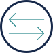

Associates previously interacted with an appeal at only one point in the process. The transformation required them to understand and manage the complete appeals lifecycle. The workforce did not fully understand the change or have confidence that leadership supported the new way of working. The initiative therefore required significant change readiness, stakeholder alignment, workforce enablement, and process knowledge development.
The change was designed to:
• Enable scalable knowledge transfer
• Reduce errors
• Reduce repetitive work and duplicate review
• Improve response time
AH™ Approach
AH™ is a sustainable transformation I created... to reflect my experience with strategizing the best approach... to streamline operations, optimize workflows, and align people, processes, and technology.
A
AI and Automation
• Identified opportunities to use AI to categorize incoming appeals and support quality.
• Developed an Ask SPRING chatbot concept to support the appeals workflow.
B
Business Transformation
• Aligned transformation to business objectives, operating model, roles, and processes.
• Applied workforce development, blended learning, competency development, learner engagement, and performance support.
• Translated end-to-end appeals process into a learnable and usable model.

C
Change Management
• Supported organizational restructuring involving 6 role consolidation .
• Communicated rationale, impacts, and implications of change across leadership, stakeholders, and frontline associates.
D
Digital Solutions
• Consolidated IRE materials with online help.
• Developed a PowerBuilder/Excel appeal classification tool.
• Developed a quality audit tool to introduce standards and risk controls.
• Evaluated workforce impacts associated with 6 role consolidation.
• Gathered and analyzed stakeholder feedback to identify readiness gaps and transition needs.
F
Facilitation and Feedback
• Engaged stakeholders to understand concerns and perspectives.
• Identified resistance and factors affecting workforce acceptance.
G
Governance
• Embedded quality standards and risk controls into the appeals process through a quality audit tool.
H
Human Judgment
• Communicated significant risks to leadership throughout project.
• Continued to raise concerns about resistance.
• One week before go-live, new leadership halted implementation of the transformation.
Deliverables
• AI-enabled appeals chatbot concept
• Blended learning and performance support
• Change impact and readiness assessments
• IRE assembly packet and online help
• PATH troubleshooting workflow
• PowerBuilder/Excel appeal classification tool
• Quality audit and risk-control tool (see graphic)
• Resistance-management and manager support materials
• SPRING end-to-end appeals lifecycle model
• Stakeholder analysis and communications
• STARS appeal-classification framework
• Ask SPRING Chatbot: an AI-enabled support for categorizing incoming appeals, navigating the appeals lifecycle, and improving consistency and quality
Measurement and Analytics
Change Readiness
• Gathered and analyzed stakeholder feedback to identify concerns and readiness gaps
• Assessed workforce impact associated with the six-role consolidation
• Identified resistance and areas requiring additional communication, training, and change support
• Communicated implementation risks and readiness concerns to leadership
The Outcome
• Change-management risks identified during implementation informed leadership decisions regarding the transformation
• Employees gained greater clarity around what was changing, why it mattered, how roles and responsibilities would be affected, and what would be required of them
• SPRING lifecycle model provided an end-to-end appeals process which associates were expected to learn and apply
• Workforce readiness gaps, stakeholder resistance, and implementation risks were identified and communicated before go-live
• New leadership halted the project one week before go-live, so the intended operational adoption and performance outcomes were not realized